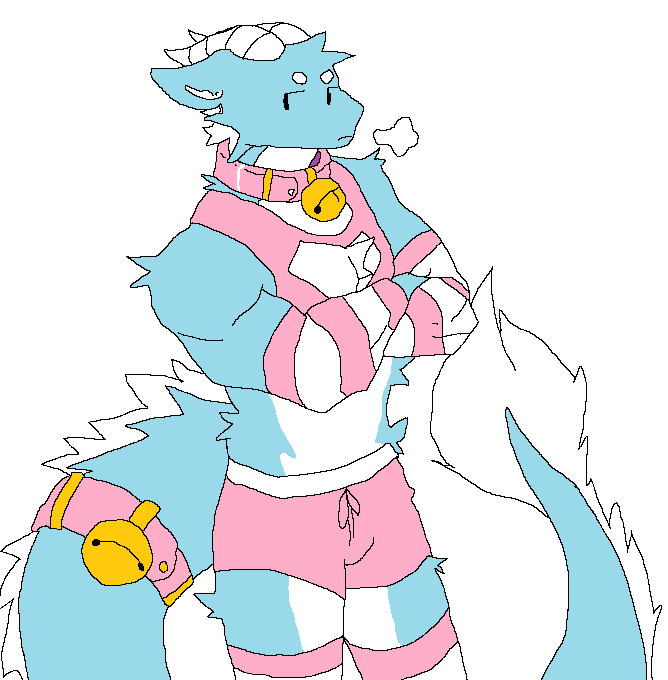

Ülesanne 4
Kõik teevad reposse selle lehe muutmiseks OMA ERALDI BRANCHI
Master branchi (kus see leht hetkel asub) MUUTA EI TOHI
Iga inimene teeb oma branchis, oma ülesanne 4 lehele, koduselt, lehekülje, mis kirjeldab
ära vastava inimese lemmikkunstniku. Olgu ta siis klassikaline kunstnik või online insta artist vms.
Kunstniku kohta tahaks teada
- Kes ta on
- Kuidas ta kunstini jõudis
- Kaua ta kunstnik olnud on
- Mis stiile kunstnik valdab/teeb
- Näiteid töödest mis teile kunstniku portfoliost meeldib
- Teiepoolne ülevaade kunstniku loomingust üldiselt
- MSpaintis teie joonistatud pilt mis üritab matkida kunstnikule omapärast stiili
"@Bun0nTheMoon" (Twitter-is)
Minu arvates, ta lihtsalt leidis huvi selles, sest tal ei olnud midagi paremat teha ¯\_(ツ)_/¯
Mitut aastat (ma ei tea täpselt)
Pastelltoone, peene joonpilt
Minu arvamus
Minu arvates on tema kunst ilus, tal on hea anatoomia õppused selgelt nähtavad ja ilusad värvi valikud
Galerii


Mida ma tegin (traced asf)
